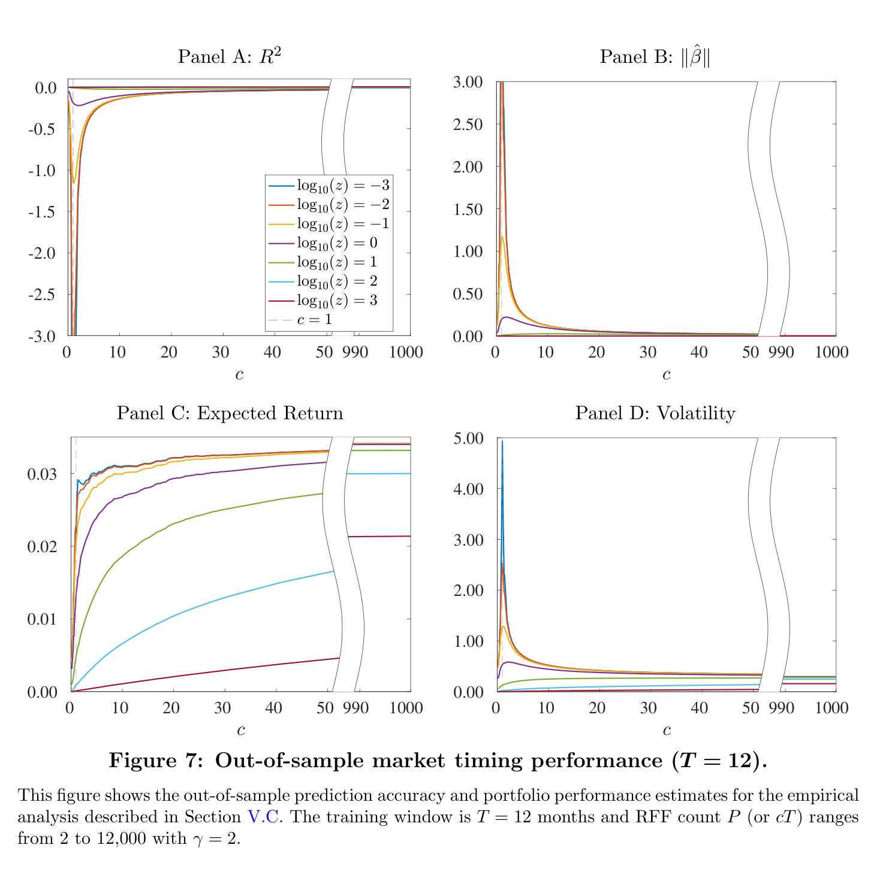
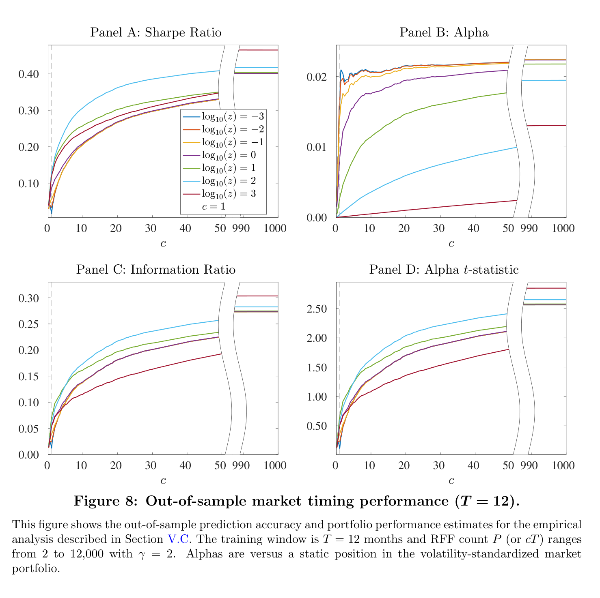
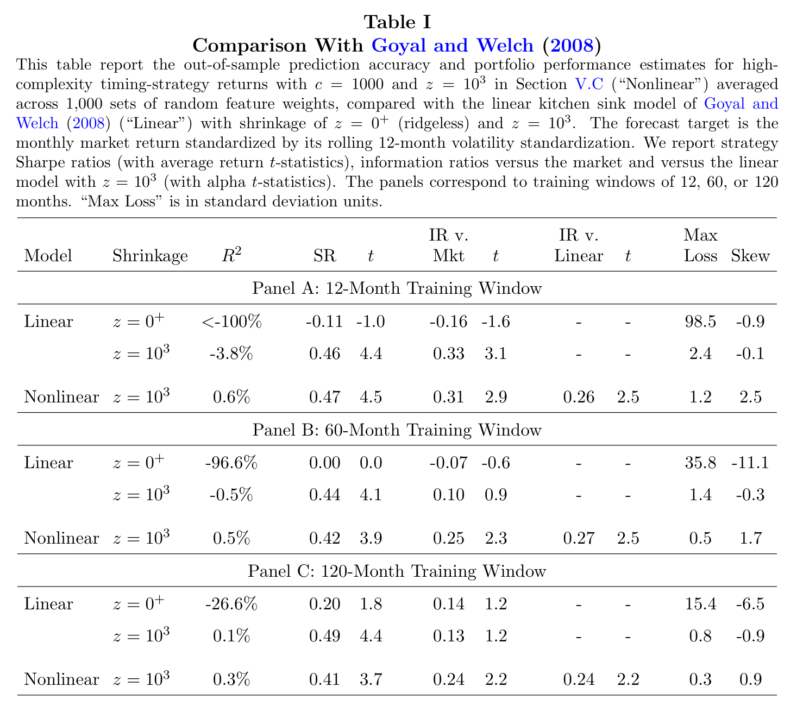
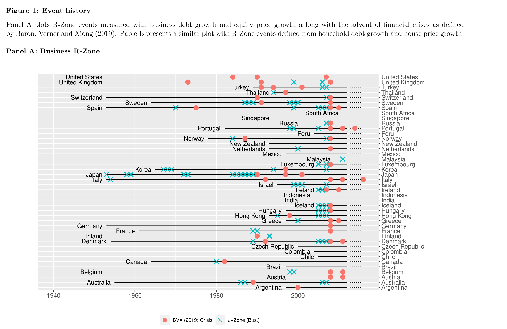
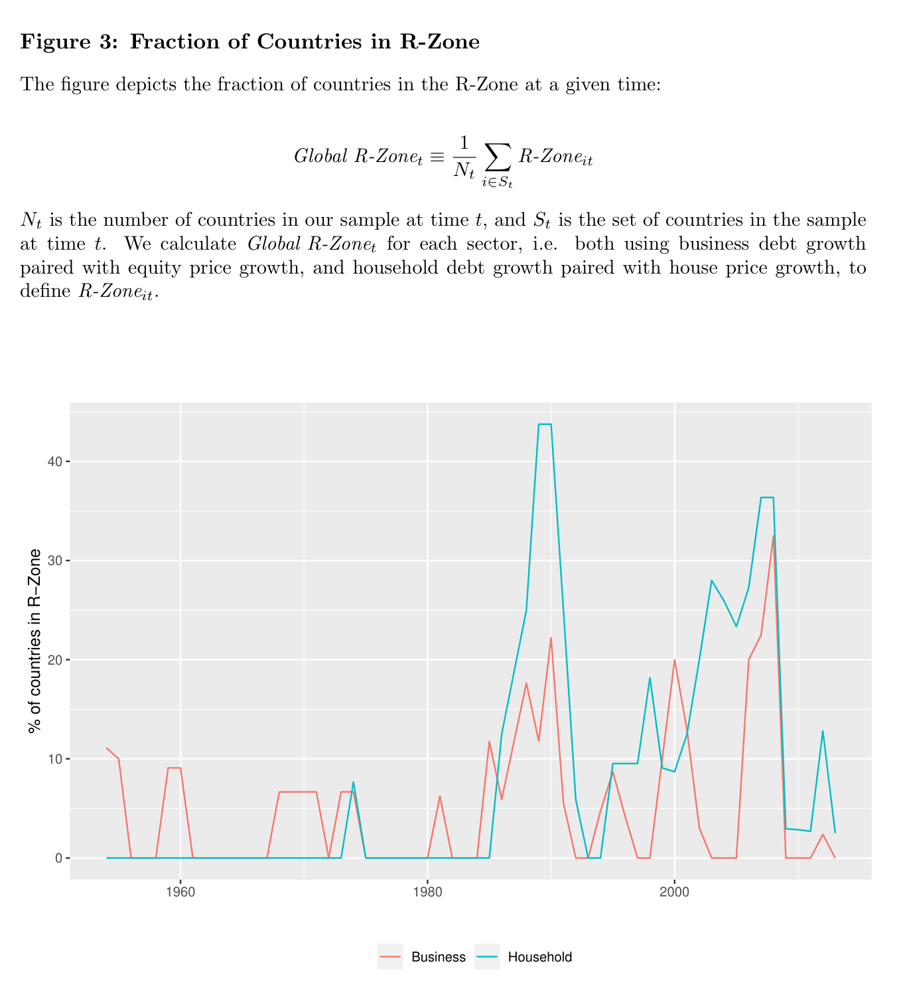
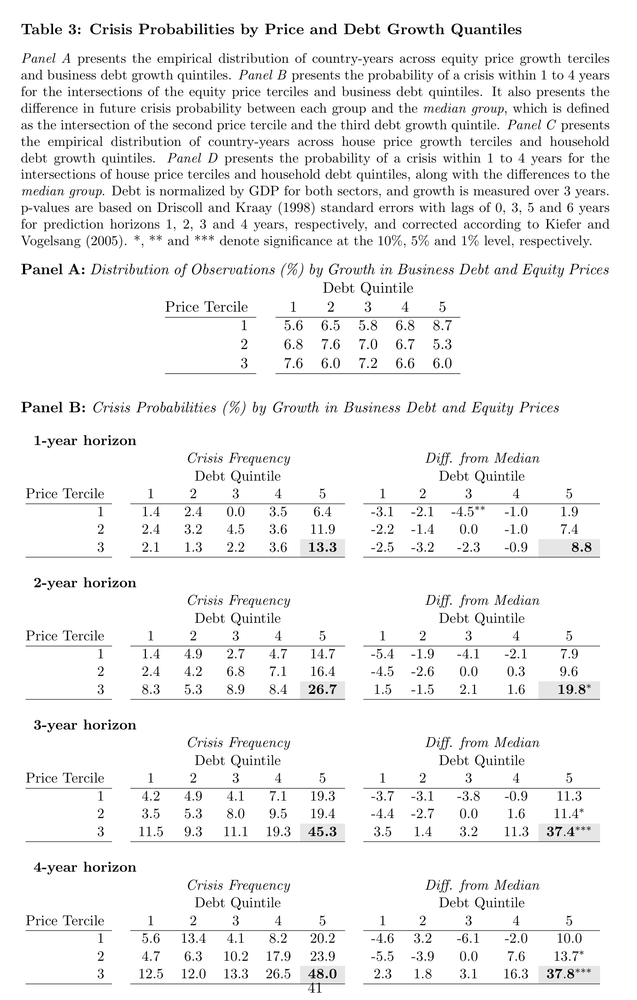
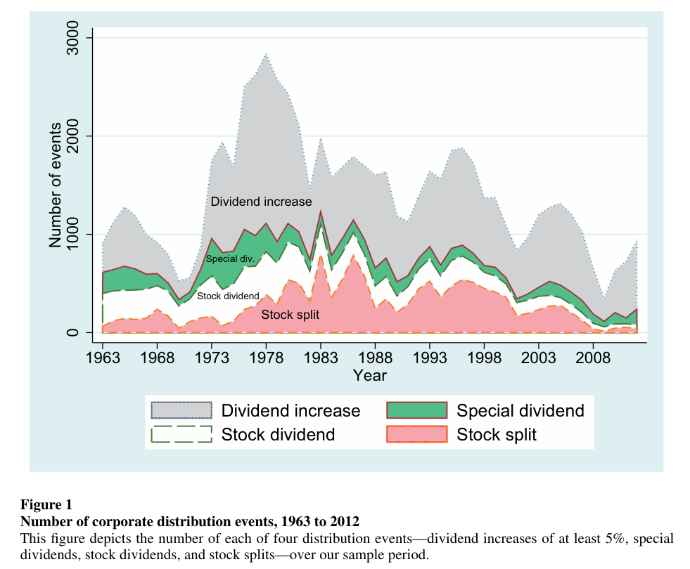
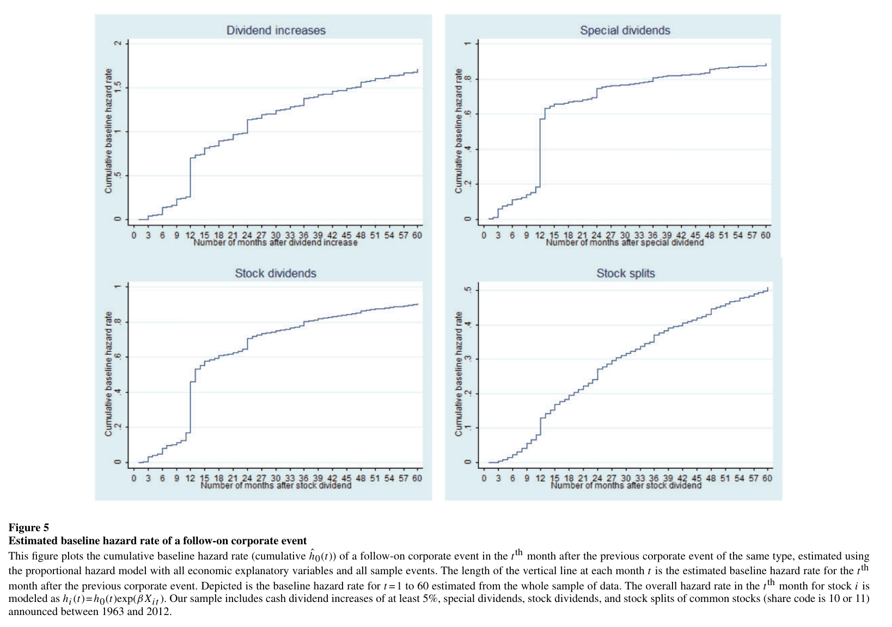
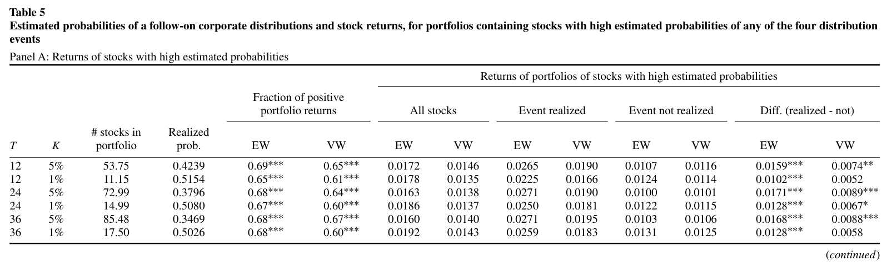

Project Previews: What Does a Replication Look Like?#
Every final project on the list of potential projects asks you to do the same thing: take a published finance paper, rebuild its dataset from the original sources, and reproduce the tables and figures that carry its main result. That description can sound dry until you see what the outputs actually look like. This page walks through three of the papers on the list and shows the exact exhibits you would recreate—two figures and a table from each—along with why each one is worth your time.
A replication is not a homework problem with a known answer key. These are real research artifacts. When your Figure 5 has spikes in the same places as the published Figure 5, you have independently verified a fact about the world, and you understand that fact at a level no amount of reading can produce.
1. Can a model with 12,000 parameters and 12 observations beat the market?#
Kelly, Malamud, and Zhou, “The Virtue of Complexity in Return Prediction” (Journal of Finance, 2024) — project #1 on the list.
Everything you learn in a first econometrics course says this paper should not work. It forecasts the monthly stock market return using models with more parameters than observations—up to 12,000 random Fourier features estimated on as few as 12 months of data. Classical statistics calls that hopelessly overfit. Modern machine learning theory (“benign overfitting,” “double descent”) says otherwise, and this paper brings that insight to finance: out-of-sample performance keeps improving as models get more complex.
The evidence is in the “virtue of complexity” curves. The x-axis is model complexity \(c\) (parameters per observation). Everything to the right of \(c = 1\) is a model that perfectly memorizes its training data—and performance out of sample keeps getting better:
{kind=link}

Fig. 14 Figure 7 of the paper. Out-of-sample R², coefficient norm, expected return, and volatility of the market-timing strategy as model complexity grows (12-month training window). Expected returns rise and volatility falls precisely in the “ridgeless” region that classical statistics says should be a disaster.#
{kind=link}

Fig. 15 Figure 8 of the paper. The payoff: Sharpe ratio, alpha, and information ratio of the timing strategy all increase with complexity, with Sharpe ratios exceeding 0.4 at the highest complexity levels.#
And the head-to-head that makes the point concrete: the complex nonlinear model against the classic linear “kitchen sink” regression built from the same 15 Goyal–Welch predictors. The linear model’s out-of-sample R² is catastrophically negative; the complex model’s is positive, with better Sharpe ratios and far smaller maximum losses:
{kind=link}

Fig. 16 Table I of the paper. The high-complexity model (“Nonlinear”) beats the Goyal–Welch linear kitchen-sink model at every training window—12, 60, and 120 months.#
Why this one is fun to replicate. The data is a single, small, public CSV (the Goyal–Welch predictors)—so unlike most projects, zero time is spent fighting data vendors. All the difficulty is computational: writing a recursive out-of-sample loop that runs thousands of ridge regressions efficiently (there is an elegant trick—solving ridge in its dual form—that turns an impossible computation into a fast one). When your VoC curves come out with the right shape, you will have reproduced one of the most provocative results in modern empirical asset pricing, one that overturns thirty years of conventional wisdom descending from Goyal and Welch’s famous critique (which is also on the project list, as #7—same data, opposite conclusion).
2. Financial crises are predictable#
Greenwood, Hanson, Shleifer, and Sørensen, “Predictable Financial Crises” (Journal of Finance, 2022) — project #2 on the list.
The conventional view after 2008 was that financial crises are lightning strikes: devastating, but essentially impossible to see coming. This paper assembles a panel of 42 countries over 1950–2016 and argues the opposite. When credit growth and asset prices boom together—the authors call this the “Red zone” or R-zone—the probability of a crisis within three years rises to 40% or more. Crises are not bolts from the blue; they follow overheated credit markets with a long, measurable lead.
The first exhibit is the paper’s event history—decades of crises across dozens of countries, with the R-zone warning signal marked alongside:
{kind=link}

Fig. 17 Figure 1 of the paper (working paper version). Financial crises (red dots) across 42 countries, 1950–2016, with R-zone episodes (blue crosses). Look at any country: the crosses tend to come first, then the dots. Japan’s late-1980s bubble, Scandinavia around 1990, and the global cluster of 2007–2008 all show the pattern.#
Aggregating the signal across countries produces a global overheating index that peaks—ominously—right before the world’s great crisis waves:
{kind=link}

Fig. 18 Figure 3 of the paper. The fraction of countries in the R-zone. The two great spikes come just before 1990 (Japan and Scandinavia) and 2008 (everyone).#
The headline numbers are in the double-sort table: take country-years sorted by debt growth and asset-price growth, and read off the crisis probability in each cell. In the boom-boom corner, the three-year crisis probability hits 45%:
{kind=link}

Fig. 19 Table 3 of the paper. Crisis probabilities by asset-price growth (rows) and debt growth (columns). The bottom-right cells—high price growth, high debt growth—are the R-zone, where crisis probabilities reach 45% at the three-year horizon, versus roughly 7% unconditionally.#
Why this one is fun to replicate. This is the project for anyone interested in macro, policy, or risk. The data assembly is a genuinely international undertaking—BIS credit statistics, IMF databases, OECD house prices, the Jordà–Schularick–Taylor Macrohistory database—exactly the kind of multi-source merge that real policy shops (central banks, the IMF, macro hedge funds) do constantly. And the result you reproduce has teeth: a former Fed governor could have looked at your Figure 3 in 2006 and seen the storm coming. Since the paper’s sample ends in 2016, you can also compute where every country sits in the R-zone today.
3. Firms are creatures of habit—and the market doesn’t fully notice#
Bessembinder and Zhang, “Predictable Corporate Distributions and Stock Returns” (Review of Financial Studies, 2015) — project #4 on the list.
Here is a simple fact hiding in plain sight in CRSP: firms announce dividend increases, special dividends, stock splits, and stock dividends on a schedule—very often on the anniversary of the last such announcement. Announcements are good news, the calendar tells you when they are coming, and yet the market is systematically surprised. A strategy that simply buys stocks with a high predicted probability of an announcement earns significant abnormal returns.
The raw material is fifty years of corporate distribution events:
{kind=link}

Fig. 20 Figure 1 of the paper. The four distribution event types, 1963–2012: roughly 37,000 dividend increases, 7,700 special dividends, 11,600 stock dividends, and 14,100 stock splits, all identified from CRSP distribution codes.#
The anniversary effect jumps out of the estimated hazard rates. The probability of a follow-on announcement spikes at exactly 12, 24, and 36 months after the last one:
{kind=link}

Fig. 21 Figure 5 of the paper. Cumulative baseline hazard rates from the Cox proportional hazard model. The vertical jumps at 12, 24, and 36 months are firms repeating last year’s announcement on schedule. Corporate behavior is this mechanical.#
Turning the pattern into a strategy: each month, buy the stocks with the highest model-predicted probability of an announcement. The returns are large, and the gap between months when the predicted event happens and when it doesn’t confirms the market is genuinely surprised by news it could have forecast:
{kind=link}

Fig. 22 Table 5, Panel A of the paper. Portfolios of high-probability stocks earn 1.4–1.9% per month, and returns are sharply higher in months when the predicted event is realized—evidence that the market underreacts to predictable good news.#
Why this one is fun to replicate. This is the closest thing on the list to how a quantitative trading desk actually works: find a behavioral regularity, build a predictive model with strict point-in-time discipline (the paper’s hazard model is re-estimated each month using only data available at the time), form portfolios, and measure alpha against standard factors. Along the way you learn survival analysis (the Cox model, borrowed from biostatistics), serious CRSP event-data work, and honest out-of-sample strategy evaluation. And the anniversary spikes in Figure 5 are simply a delight to reproduce—when your version shows the same jumps at 12, 24, and 36 months, you will have caught corporate America keeping a calendar.